Sig: Análisis Semántico Sup: Análisis Sintáctico Descendente en Ant: Recursión por la Izquierda Con:
Definimos el lenguaje árbol homogéneo  sobre
sobre  inductivamente:
inductivamente:

|
|
|
|
| 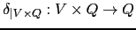 |
| 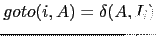. |
Observe que los elementos en  no necesariamente son
árboles ``correctos''. Por ejemplo, el árbol
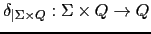
es un elemento de
no necesariamente son
árboles ``correctos''. Por ejemplo, el árbol
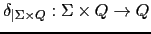
es un elemento de  .
.
Si
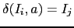 es una producción y  es de tipo
es de tipo
 ,
diremos que la producción 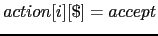 es de tipo
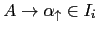.
,
diremos que la producción 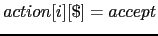 es de tipo
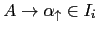.
La producción
 es del tipo
es del tipo
 .
.
Informalmente, el lenguaje generado por  se obtiene realizando sustituciones
sucesivas (derivando) desde el símbolo de arranque hasta producir un
árbol cuyos nodos estén etiquetados con elementos de
se obtiene realizando sustituciones
sucesivas (derivando) desde el símbolo de arranque hasta producir un
árbol cuyos nodos estén etiquetados con elementos de  . Debería ser claro
que, en este ejemplo, 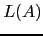 es el conjunto de las listas en
. Debería ser claro
que, en este ejemplo, 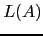 es el conjunto de las listas en  , incluyendo la lista vacía:
, incluyendo la lista vacía:
Cuando hablamos del AAA producido por un analizador sintáctico, estamos en realidad hablando de un lenguaje árbol cuya definición precisa debe hacerse a través de una gramática árbol regular. Mediante las gramáticas árbol regulares disponemos de un mecanismo para describir formalmente el lenguaje de los AAA que producirá el analizador sintáctico para las sentencias Tutu.
|
|
|
|
|
|
|
|
||
| |
|
|
| |
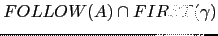 | |
| |
|
|
| |
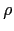 | |
| |
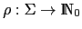 | |
| |
||
| |
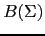 | |
| 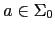 |
Entonces el lenguaje contiene árboles como el siguiente:
| 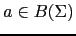 | |
||
| |
|||
| |
|
||
| 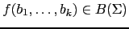, | |||
| |
|
||
| 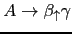, | |||
| |
|||
| |
|||
| |
El cual podría corresponderse con una sentencia como
a = b + 4 * c.
El lenguaje de árboles descrito por esta gramática árbol es el lenguaje de los AAA de las sentencias de Tutu.
Intente dar una definición formal del concepto de árbol de análisis sintáctico asociado con una derivación en una gramática árbol
|
|
|
||
| |
|||
| |
|
||
| , | |||
| |
|
||
| , | |||
| |
|||
| |
|||
| |
Calcule los subárboles
 ,
,
 ,
,
 y
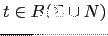.
y
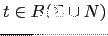.
| 1 | |
|
| 2 | |
|
| 3 | |
|
| 4 | |
|
| 5 | |
|
| 6 | |
|
| 7 | |
|
| 8 | |
|
| 9 | |
|
| 10 | |
|
| 11 | |
|
| 12 | |
|
| 13 | |
Hemos extendido el concepto de gramática árbol con el concepto de lista de no terminales. A la hora de construir las estructuras de datos las listas de variables se van a traducir por listas de árboles.
Por ejemplo, un árbol abstracto para el programa
int a,b; string c, d; a = 4; p a
Sería de la forma:
PROGRAM(
DECLS[INT[ID, ID], STRING[ID, ID]],
STS[ASSIGN(LEFTVALUE, NUM), PRINT(ID)]
)
Donde los corchetes indican listas y los paréntesis tuplas.
Para llevar a cabo la traducción deberemos tomar decisiones sobre que forma de representación nos conviene. Cada nodo del AAA va a ser un objeto y la clase indicará si es un nodo suma, producto, una declaración, una asignación, etc.
Cada nodo del árbol AAA va a ser un objeto.
De este modo el acceso a los atributos del nodo se hará a través de
los métodos asociados. Además, el procedimiento de traducción
al lenguaje objetivo depende del tipo de nodo. Así por ejemplo,
el método traducción
es diferente para un nodo de tipo  que para otro de tipo .
que para otro de tipo .
Resumamos antes de entrar en detalle, la forma de manejar los objetos en Perl:
package NUM;
package NUM;
sub incr { my $self = shift; $self->{VAL}++ }
el primer argumento de un método suele ser la referencia al
objeto en cuestión.
my $a = bless {VAL => 4}, 'NUM';
crea un objeto referenciado por $a que pertenece a la clase NUM.
Los métodos del objeto son las subrutinas que aparecen en el package NUM.
$a->incr;Cuando se usa la sintáxis flecha, el primer argumento de la rutina es la referencia al objeto, esto es, la llamada anterior es equivalente a
NUM::incr($a)
sub new { my ($class, $value) = @_; return bless {VAL => $value}, $class; }
Normalmente se llaman usando la sintáxis flecha, pero a la izquierda de la
flecha va el nombre de la clase. Por ejemplo:
my $a = NUM->new(4)
En este caso, el primer argumento es el nombre de la clase. La llamada anterior es equivalente a
NUM::new('NUM', 4)
Volviendo a nuestro problema de crear el AAA, para crear los
objetos de las diferentes clases de nodos
usaremos el módulo Class::MakeMethods::Emulator::MethodMaker
(véase la línea 9):
1 package PL::Syntax::Analysis;
2
3 use 5.006;
4 use strict;
5 use warnings;
6 use Data::Dumper;
7 use IO::File;
8 use Class::MakeMethods::Emulator::MethodMaker '-sugar';
9
10 require Exporter;
11 our @ISA = qw(Exporter);
12 our @EXPORT = qw( );
13 our $VERSION = '0.02';
14
15 #######################################################
16
17 # Grammar:
18 # P : DD L | L
19 # DD: D ';' DD | D ';'
20 # D : int I | string I
21 # L : S | S ; L
22 # S : ID '=' E | p E | epsilon
23 # E : T '+' E | T
24 # T : F '*' T | F
25 # F : '(' E ')' | id | num | str
26 # I : id ',' I | id
Hemos aislado la fase de análisis sintáctica en un módulo
aparte denominado PL::Syntax::Analysis.
La dependencia se actualiza en Makefile.PL:
PL0506/04sintactico/PL-Tutu$ cat -n Makefile.PL
1 use 5.008004;
2 use ExtUtils::MakeMaker;
3 WriteMakefile(
4 NAME => 'PL::Tutu',
5 VERSION_FROM => 'lib/PL/Tutu.pm', # finds $VERSION
6 PREREQ_PM => {Class::MakeMethods::Emulator::MethodMaker => 0},1
7 EXE_FILES => [ 'scripts/tutu.pl', 'scripts/tutu' ],
8 ($] >= 5.005 ? ## Add these new keywords supported since 5.005
9 (ABSTRACT_FROM => 'lib/PL/Tutu.pm', # retrieve abstract from module
10 AUTHOR => 'Casiano Rodriguez Leon <casiano@ull.es>') : ()),
11 );
Se actualiza también MANIFEST:
$ cat -n MANIFEST 1 Changes 2 lib/PL/Error.pm 3 lib/PL/Lexical/Analysis.pm 4 lib/PL/Syntax/Analysis.pm 5 lib/PL/Tutu.pm 6 Makefile.PL 7 MANIFEST 8 MANIFEST.SKIP 9 README 10 scripts/test01.tutu 11 scripts/tutu 12 scripts/tutu.pl 13 t/01Lexical.t
Ahora compile llama a Syntax::Analysis::parser pasándole
como argumento la lista de terminales @tokens. La función parser
devuelve el AAA:
04sintactico/PL-Tutu/lib/PL$ sed -ne '/sub compile\>/,/^}/p' Tutu.pm | cat -n
1 sub compile {
2 my ($input) = @_;
3 #my %symbol_table = ();
4 #my $data = ""; # Contiene todas las cadenas en el programa fuente
5 my $target = ""; # target code
6 my @tokens = ();
7 my $tree = undef; # abstract syntax tree
8 #my $global_address = 0;
9
10
11 ########lexical analysis
12 @tokens = scanner($input);
13 #print "@tokens\n";
14
15 ########syntax (and semantic) analysis
16 $tree = &Syntax::Analysis::parser(@tokens);
17 print Dumper($tree);
18
19 ########machine independent optimizations
20 &Machine::Independent::Optimization::Optimize;
21
22 ########code generation
23 &Code::Generation::code_generator;
24
25 ########peephole optimization
26 &Peephole::Optimization::transform($target);
27
28 return \$target;
29 }
El módulo Class::MakeMethods::Emulator::MethodMaker
permite crear constructores y métodos de acceso.
El módulo no viene con la distribución de Perl, así que, en general, deberá
descargarlo desde CPAN e instalarlo.
Así definimos que existe una clase de nodos TYPE
que nuestro AAA va a tener:
package TYPE; make methods get_set => [ 'NAME', 'LENGTH' ], new_hash_init => 'new';
El uso de los argumentos get_set => [ 'NAME', 'LENGTH' ]
hace que se cree un objeto de tipo hash con claves
'NAME' y 'LENGTH' así como métodos NAME
y LENGTH que cuando se llaman con un argumento devuelven
el valor y cuando se llaman con dos argumentos modifican el
valor correspondiente.
La clave get_set produce métodos de acceso
y modificación de los atributos del objeto que
tienen la forma:
sub TYPE::NAME {
my ($self, $new) = @_;
defined($new) and $self->{NAME} = $new;
return $self->{NAME};
}
Asi mismo el uso de new_hash_init => 'new'
genera un constructor cuyo nombre
será 'new' y que cuando es llamado inicializará el
objeto con los argumentos con nombre especificados en la llamada.
El constructor construído (vaya retruécano) cuando se usa la clave
new_hash_init tiene el siguiente aspecto:
sub TYPE::new {
my ($class, %args) = @_;
my $self = {};
bless $self, $class;
foreach my $attribute (keys %args) {
$self->$attribute($args{$attribute});
}
return $self;
}
Ahora podemos crear objetos de la clase TYPE haciendo:
my $int_type = TYPE->new(NAME => 'INTEGER', LENGTH => 1); my $string_type = TYPE->new(NAME => 'STRING', LENGTH => 2); my $err_type = TYPE->new(NAME => 'ERROR', LENGTH => 0);Cada uno de estos objetos es un hash con las correspondientes claves para el nombre y el tipo.
Otros tipos de nodos del AAA son:
package PROGRAM; # raíz del AAA make methods get_set => [ 'DECLS', 'STS' ], new_hash_init => 'new'; package STRING; # tipo make methods get_set => [ 'TYPE', 'IDLIST' ], new_hash_init => 'new'; package INT; # tipo make methods get_set => [ 'TYPE', 'IDLIST' ], new_hash_init => 'new'; package ASSIGN; #sentencia make methods get_set => [ 'LEFT', 'RIGHT' ], new_hash_init => 'new'; package PRINT; #sentencia make methods get_set => [ 'EXPRESSION' ], new_hash_init => 'new'; package NUM; # para los números make methods get_set => [ 'VAL', 'TYPE' ], new_hash_init => 'new'; package ID; # Nodos identificador. Parte derecha make methods get_set => [ 'VAL', 'TYPE' ], new_hash_init => 'new'; package STR; # Clase para las constantes cadena make methods get_set => [ 'OFFSET', 'LENGTH', 'TYPE' ], new_hash_init => 'new'; package PLUS; # Nodo suma make methods get_set => [ 'LEFT', 'RIGHT', 'TYPE' ], new_hash_init => 'new'; package TIMES; make methods get_set => [ 'LEFT', 'RIGHT', 'TYPE' ], new_hash_init => 'new'; package LEFTVALUE; # Identificador en la parte izquierda make methods # de una asignación get_set => [ 'VAL', 'TYPE' ], new_hash_init => 'new';
Hemos extendido el concepto de gramática
árbol con el concepto de lista de no terminales.
A la hora de construir las estructuras de datos
las listas de variables se van a traducir por listas de árboles.
Los tipos de nodos (,  , ...)
se traducen en nombres de clases. Hemos hecho
una excepción con
, ...)
se traducen en nombres de clases. Hemos hecho
una excepción con  el cual es simplemente una
variable cadena conteniendo el identificador correspondiente.
el cual es simplemente una
variable cadena conteniendo el identificador correspondiente.
El siguiente esquema de traducción resume la idea para una gramática
simplificada: cada vez que encontremos un nodo en el árbol sintáctico
concreto con una operación crearemos un nodo en el AAA cuya clase
viene definida por el tipo de operación. Para los terminales
creamos igualmente nodos indicando de que clase de terminal
se trata. El atributo nodo lo denotaremos por n:
|
|
{ $e{n} = PLUS->new(LEFT=>$e_1{n}, RIGHT=>$f{n}) } |
| 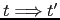 | { $f{n} = NUM->new(VAL => $NUM{VAL}) } |
|
|
{ $f{n} = ID->new(VAL => $ID{VAL}) } |
La estructura de cada rutina sigue siendo la misma, sólo que ampliada con las acciones para la construcción de los correspondientes nodos. Veamos por ejemplo, como modificamos la subrutina factor:
sub factor() {
my ($e, $id, $str, $num);
if ($lookahead eq 'NUM') {
$num = $value;
match('NUM');
return NUM->new(VAL => $num, TYPE => $int_type);
}
elsif ($lookahead eq 'ID') {
$id = $value;
match('ID');
return ID->new( VAL => $id, TYPE => undef);
}
elsif ($lookahead eq 'STR') {
$str = $value;
match('STR');
return STR->new(OFFSET => undef, LENGTH => undef, TYPE => $string_type);
}
elsif ($lookahead eq '(') {
match('(');
$e = expression;
match(')');
return $e;
}
else {
Error::fatal("Se esperaba (, NUM o ID");
}
}
| Gramática de los Árboles de Tutu | Gramática del lenguaje Tutu |
| declarations
|
|
| statements
|
|
| idlist
|
En este caso las subrutinas asociadas no devuelven
objetos sino listas de objetos.
Esto da lugar a una compactación del AAA.
Veánse los códigos de statements y idlist:
sub statements() {
my @s;
@s = (statement());
if ($lookahead eq ';') {
match(';');
push @s, statements();
}
return @s;
}
sub idlist() {
my @id;
if ($lookahead eq 'ID') {
@id = ($value); # no es un objeto
match('ID');
if ($lookahead eq ',') {
match(',');
push @id, idlist();
}
}
else {
Error::fatal('Se esperaba un identificador');
@id = ('ERROR');
}
return @id;
}
| 2 |
|
|
| 4 |
|
|
| 5 |
|
|
| 6 |
|
Los nodos declaration son un hash con una clave TYPE la cual
apunta a la estructura de datos/objeto
describiendo el tipo. La otra clave del hash IDLIST apunta a una
lista de identificadores. Los elementos de esta lista son simples
identificadores (identificados en la gramática árbol anterior
como  y no como objetos ).
La parte de la gramática implicada en las declaraciones es:
y no como objetos ).
La parte de la gramática implicada en las declaraciones es:
| declaration
|
| idlist
|
Así pues, el código construye un nodo de la clase
INT o STRING según sea el caso.
sub declaration() {
my ($t, $class, @il);
if (($lookahead eq 'INT') or ($lookahead eq 'STRING')) {
$class = $lookahead;
$t = &type();
@il = &idlist();
return $class->new(TYPE => $t, IDLIST => \@il);
}
else {
Error::fatal('Se esperaba un tipo');
}
}
Observe la llamada $class->new(TYPE => $t, IDLIST => \@il)
en la cual la clase se usa a través de una referencia simbólica.
make test
para comprobar el correcto funcionamiento de su analizador sobre las mismas.
Utilize el módulo Data::Dumper para volcar las estructuras de datos
resultantes.
| 1 | p
|
| 2 | b
|
| 3 | b
|
| 4 | ds
|
| 5 | ds
|
| 6 | d
|
| 7 | d
|
| 8 | ss
|
| 9 | ss
|
| 10 | s
|
| 11 | s
|
| 12 | s
|
| 13 | s
|
| 14 | e
|
| 15 | e
|
| 16 | e
|
| 17 | t
|
| 18 | t
|
| 19 | t
|
| 20 | f
|
| 21 | f
|
| 22 | f
|
| 23 | f
|
| 24 | il
|
| 25 | il
|
Casiano Rodríguez León